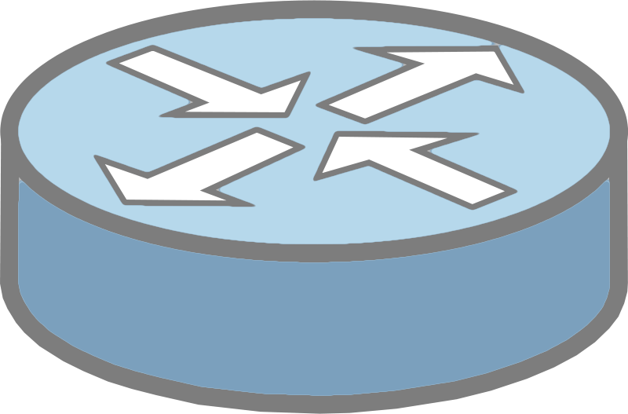

# Web Application Messaging Protocol (WAMP) [WAMP][wamp] is a routed protocol that provides two messaging patterns: [Publish & Subscribe][pubsub] and routed [Remote Procedure Calls][rpc]. It is intended to connect application components in distributed applications. **Recommended reading** * [WebSockets](../ws/) --- class: center, middle ## What is WAMP? .breadcrumbs[<a href="#1">Web Application Messaging Protocol (WAMP)</a>] <img src='images/crossbar-architecture.png' class='w70' /> --- ### A messaging protocol on top of WebSockets .breadcrumbs[<a href="#1">Web Application Messaging Protocol (WAMP)</a> > <a href="#2">What is WAMP?</a>] WAMP is a **high-level messaging protocol for distributed applications**. It was originally defined as a [subprotocol of WebSocket][ws-subprotocol]. In its current specification, it uses WebSocket as its default transport, but can be **transmitted via any other protocol that allows for ordered, reliable, bi-directional, and message-oriented communications**. --- ### Routed protocol .breadcrumbs[<a href="#1">Web Application Messaging Protocol (WAMP)</a> > <a href="#2">What is WAMP?</a>] WAMP is a **routed protocol**, with all components connecting to a WAMP **router**, which performs message routing between the components. <p class='center'><img src='images/routed-protocol.png' class='w60' /></p> --- ### Two messaging patterns .breadcrumbs[<a href="#1">Web Application Messaging Protocol (WAMP)</a> > <a href="#2">What is WAMP?</a>] WAMP provides two messaging patterns: .grid-50[ **Publish & Subscribe (PubSub)** [Publish & Subscribe][pubsub] is a messaging pattern where messages are published to topics that other components may subscribe to. The decouples publishers from subscribers, as they do not require prior knowledge of each other. <img src='images/pubsub.png' class='w100' /> ] .grid-50[ **Remote Procedure Calls (RPC)** A [Remote Procedure Call][rpc] is when a computer program causes a procedure to execute on another computer on a shared network, without the programmer explicitly coding the details of the remote interaction. <img src='images/rpc.jpg' class='w100' /> ] --- class: center, middle ## Unified application routing .breadcrumbs[<a href="#1">Web Application Messaging Protocol (WAMP)</a>]  --- ### The client-server world .breadcrumbs[<a href="#1">Web Application Messaging Protocol (WAMP)</a> > <a href="#6">Unified application routing</a>] In the client-server model, a call goes directly from the Caller (client) to the Callee (server), whether it's an HTTP request or a remote procedure call: <p class='center'><img src='images/client-server.png' class='w50' /></p> **The Caller needs to know where the Callee resides and how to reach it**. This introduces a **strong [coupling][coupling]** between Caller and Callee, which can cause problems because it tends to make applications complex and unmaintainable. --- ### Publish & Subscribe .breadcrumbs[<a href="#1">Web Application Messaging Protocol (WAMP)</a> > <a href="#6">Unified application routing</a>] .grid-50[ In the [Publish & Subscribe (PuSub)][pubsub] model, a **Publisher** submits messages to an abstract **topic**, and **Subscribers** only receive messages indirectly by announcing their interest on a respective topic: ] .grid-50[ <img src='images/pubsub.png' class='w100' /> ] .container[ .grid-50[ Both do not know about each other. They are **decoupled** via the topic and an intermediary usually called **Broker**: ] .grid-50[ <img src='images/wamp-pubsub.png' class='w100' /> ] ] --- #### PubSub with WAMP .breadcrumbs[<a href="#1">Web Application Messaging Protocol (WAMP)</a> > <a href="#6">Unified application routing</a> > <a href="#8">Publish & Subscribe</a>] With WAMP, **Subscribers** must first ask the Broker to subscribe to a topic (step 1). The **Broker** keeps a book of subscriptions: who is currently subscribed on which topic. WAMP is now ready to route PubSub messages. <p class='center'><img src='images/wamp-pubsub-detailed.png' class='w90' /></p> When a **Publisher** publishes a message to a topic (step 2), the Broker will determine the set of Subscribers to that topic, and then forward the message to all those Subscribers (step 3). --- ### Remote Procedure Calls .breadcrumbs[<a href="#1">Web Application Messaging Protocol (WAMP)</a> > <a href="#6">Unified application routing</a>] .grid-50[ [Remote Procedure Calls (RPCs)][rpc] can also be decoupled by introducing an intermediary, the **Dealer**. The **Dealer** routes calls originating from the **Caller** to the **Callee** and routes back results or errors. Both do not know about each other; this knowledge is encapsulated in the Dealer. ] .grid-50[ <img src='images/wamp-rpc.png' class='w100' /> ] --- #### Routed RPC with WAMP .breadcrumbs[<a href="#1">Web Application Messaging Protocol (WAMP)</a> > <a href="#6">Unified application routing</a> > <a href="#10">Remote Procedure Calls</a>] With WAMP, a **Callee** must register a procedure at a Dealer (step 1) under an abstract name: an URI identifying the procedure. The **Dealer** keeps a book of registered procedures: who to call for each URI. Once procedures have been registered, WAMP is ready to route RPC calls. <p class='center'><img src='images/wamp-rpc-detailed.png' class='w90' /></p> To call a remote procedure, the **Caller** talks to the Dealer and provides the URI of the procedure. The Dealer will look up the procedure in his book of registered procedures and contact the correct Callee to execute the procedure (step 2). When the Caller is done, the Dealer will retrieve the result and send it back to the Caller (step 3). --- ### The WAMP router .breadcrumbs[<a href="#1">Web Application Messaging Protocol (WAMP)</a> > <a href="#6">Unified application routing</a>] What if you combine a **Broker** (for Publish & Subscribe) and a **Dealer** (for routed Remote Procedure Calls)? You get what WAMP calls a **Router**: <p class='center'><img src='images/wamp-router.png' class='w50' /></p> A Router is capable of routing both calls and events, and hence can support flexible, decoupled architectures that use both RPC and PubSub. --- ### A WAMP example .breadcrumbs[<a href="#1">Web Application Messaging Protocol (WAMP)</a> > <a href="#6">Unified application routing</a>] Imagine you have a small embedded device like an Arduino Yun with a temperature sensor and an actuator like a light connected. And you want to integrate the device into an overall system with a user-facing frontend to control the light, and continuously process sensor values in a backend component: <p class='center'><img src='images/wamp-architecture.png' class='w70' /></p> --- ### Decoupled architecture .breadcrumbs[<a href="#1">Web Application Messaging Protocol (WAMP)</a> > <a href="#6">Unified application routing</a>] WAMP decouples your components because Callers are no longer required to have knowledge of Callees. There is no longer a need for a direct network connection or path between them, since all messages are routed by WAMP. * Calling into procedures in **components which are not reachable from outside** at the network level, but which can establish an outgoing network connection to the WAMP router. * This decoupling of transport and application layer traffic allows a **reversal of command** where a cloud-based system can securely control remote devices. * It also allows to **treat client and server or frontend and backend components (microservices) the same**, and it even allows to develop backend code in the browser ([Free Your Code - Backends in the Browser][free-your-code]). * Since no ports on edge devices need to be opened for WAMP to work (in both directions), **the remote [attack surface][attack-surface] of these devices is completely closed** ([Security in the IoT][iot-security]). --- ### Microservices architecture .breadcrumbs[<a href="#1">Web Application Messaging Protocol (WAMP)</a> > <a href="#6">Unified application routing</a>] WAMP is one technology that can help you create a [microservices][microservices] architecture, where your business logic is split across multiple components that are independently developed and deployed: <p class='center'><img src='images/microservices.png' class='w70' /></p> > The WAMP router would function as the API gateway in this example. --- ### Scaling microservices .breadcrumbs[<a href="#1">Web Application Messaging Protocol (WAMP)</a> > <a href="#6">Unified application routing</a>] Since the Caller is not aware where, or even who is processing the call (*and it should not care!*), it is easy to: * Make **highly available components** using hot standby components. * [**Scale horizontally**][scaling-microservices] by load balancing between components. Both can be accomplished using the router's [shared registration feature][crossbar-shared-registrations]. <p class='center'><img src='images/wamp-shared-registrations.png' class='w80' /></p> --- class: center, middle ## Security .breadcrumbs[<a href="#1">Web Application Messaging Protocol (WAMP)</a>] <img src='images/security.png' class='w30' /> --- ### Transport-level security .breadcrumbs[<a href="#1">Web Application Messaging Protocol (WAMP)</a> > <a href="#17">Security</a>] The WAMP protocol itself does not encrypt messages. When using WAMP with WebSockets, you should use [**Transport Layer Security** (TLS)][tls] with a `wss://` URL. The router should present a valid TLS certificate to authenticate itself to the client. There is no other mechanism to authenticate the router. The router is **trusted** and can read all messages. --- ### WAMP realms and sessions .breadcrumbs[<a href="#1">Web Application Messaging Protocol (WAMP)</a> > <a href="#17">Security</a>] When a WAMP Client (a Caller, Callee, Subscriber or Publisher) connects to a WAMP Router, it must establish a session in a particular **Realm**. <p class='center'><img src='images/wamp-security.png' class='w80' /></p> A **Realm** is a WAMP routing and administrative domain, **optionally protected by authentication and authorization**. WAMP messages are only routed within a Realm. --- ### Authentication .breadcrumbs[<a href="#1">Web Application Messaging Protocol (WAMP)</a> > <a href="#17">Security</a>] WAMP's advanced profile defines [WAMP-level authentication][wamp-auth] to control client access to the router. There are several [authentication methods][crossbar-auth]. Here are just a few: * [Ticket authentication][crossbar-auth-ticket] with a ticket or token. * [Challenge-response authentication][crossbar-auth-ticket] uses a shared secret which never travels over the wire. * [Cryptosign authentication][crossbar-auth-ticket] uses Curve25519-based asymmetric public key cryptography. > Some methods like ticket authentication should only be used over TLS, > otherwise the secret could be intercepted. --- ### Authorization .breadcrumbs[<a href="#1">Web Application Messaging Protocol (WAMP)</a> > <a href="#17">Security</a>] WAMP authentication determines whether a client is allowed to connect and which identity it is assigned. [WAMP authorization][crossbar-authorization] determines **which permissions the client is granted** based on its identity. Authorization is URI-based and separate for the four main interactions: * `call` * `register` * `publish` * `subscribe` For example, a client may be allowed to call procedure `com.example.proc1`, subscribe topic `com.example.topic1`, but not publish to that topic. Permissions can also be granted based on patterns like `com.example.*`. --- ### Static or dynamic authentication .breadcrumbs[<a href="#1">Web Application Messaging Protocol (WAMP)</a> > <a href="#17">Security</a>] With the official [Crossbar.io router][crossbar], authentication can either be [static or dynamic][crossbar-auth-static-dynamic]; it is the same [with authorization][crossbar-authorization-dynamic]: * When using **static** mode, you configure authentication and authorization in the router's JSON configuration file. * When using **dynamic** mode: * You can register a WAMP procedure (e.g. `com.example.authenticate`) to implement your own [dynamic authentication mechanism][crossbar-auth-dynamic]. You can use custom code to determine whether the client is allowed to connect and what its role is, with access to all client information such as the HTTP headers sent during the WebSocket handshake. * You can register a WAMP procedure (e.g. `com.example.authorize`) to implement your own [dynamic authorization logic][crossbar-authorization-dynamic]. You can use custom code to determine whether a client with a particular role is authorized to perform a specific action (e.g. `call` or `register`) on a specific URI. --- class: center, middle ## Other advanced features .breadcrumbs[<a href="#1">Web Application Messaging Protocol (WAMP)</a>] --- ### MessagePack .breadcrumbs[<a href="#1">Web Application Messaging Protocol (WAMP)</a> > <a href="#23">Other advanced features</a>] Unlike WebSockets, WAMP does not support sending raw binary data to a procedure or topic, at least for now. However, it does support [MessagePack][messagepack] if you want to send the smallest possible structured data: <p class='center'><img src='images/message-pack.png' class='w70' /></p> > "MessagePack is an efficient binary serialization format. It lets you exchange > data among multiple languages like JSON. But it's faster and smaller. Small > integers are encoded into a single byte, and typical short strings require > only one extra byte in addition to the strings themselves." --- ### Progressive call results .breadcrumbs[<a href="#1">Web Application Messaging Protocol (WAMP)</a> > <a href="#23">Other advanced features</a>] .grid-40[ <img src='images/progressive-call-results.png' class='w100' /> ] .grid-60[ WAMP support procedures returning [progressive results][wamp-progressive-call-results] as they become available. This can be used to return partial results for long-running operations, or to chunk the transmission of larger result sets. ] --- class: center, middle ## Implementations .breadcrumbs[<a href="#1">Web Application Messaging Protocol (WAMP)</a>] <img src='images/implementations.jpg' class='w40' /> > WAMP is a **protocol**. To use it, you need an **actual router > implementation** that follows the specification and **client libraries that > can connect to it**. --- ### Get me some WAMP .breadcrumbs[<a href="#1">Web Application Messaging Protocol (WAMP)</a> > <a href="#26">Implementations</a>] The following implementations are developed by the authors of the specification and are (generally) the most full-featured: * [Crossbar.io][crossbar], a WAMP router. * Autobahn (WAMP client library), available in: * [C++][autobahn-cpp] * [Java][autobahn-java] * [JavaScript][autobahn-js] * [Python][autobahn-python] The specification also contains a list of other [available implementations][wamp-implementations], both for the router and client libraries, written in languages as varied as Erlang, Go, PHP and Ruby. --- ### Running a WAMP router .breadcrumbs[<a href="#1">Web Application Messaging Protocol (WAMP)</a> > <a href="#26">Implementations</a>] Here is an example of how to run a [Crossbar.io][crossbar] WAMP router on your local machine's 8080 port with [Docker][docker]: ```js $> docker run -it --name=crossbar -p 8080:8080 --rm crossbario/crossbar ``` This router would be available at `ws://localhost:8080`. It use a default configuration which allows any WAMP client to connect on a realm named `realm1` without authentication. Clients are allowed to call and/or register any procedure, and to publish/subscribe to any topic. > See the [installation documentation][crossbar-docker] for more information and > the [administration manual][crossbar-admin] for configuration. --- ### Connecting to a WAMP router with a client library .breadcrumbs[<a href="#1">Web Application Messaging Protocol (WAMP)</a> > <a href="#26">Implementations</a>] >**Warning** Autobahn currently does not work with the latest version of the **ws** library. To get it to work, install version 7.5.9 by running `npm install ws@7.5.9` Here is an example of how to connect to a WAMP router from Node.js code using the [Autobahn JavaScript library][autobahn-js]: ```js import autobahn from 'autobahn'; const connection = new autobahn.Connection({ url: 'ws://127.0.0.1:8080/ws', realm: 'realm1' }); // Open the connection. connection.open(); // Wait until the connection is open before interacting with the router. connection.onopen = function(session) { // Publish an event on a topic. `session.publish`('com.myapp.hello', [ 'Hello, world!' ]); // Register a procedure. `session.register`('com.myapp.add2', function(args) { return args[0] + args[1]; }); }; ``` --- ### Calling procedures and subscribing to events .breadcrumbs[<a href="#1">Web Application Messaging Protocol (WAMP)</a> > <a href="#26">Implementations</a>] Another client could connect to the same router to call that procedure and subscribe to those events: ```js import autobahn from 'autobahn'; const connection = new autobahn.Connection({ url: 'ws://127.0.0.1:8080/ws', realm: 'realm1' }); // Open the connection. connection.open(); // Wait until the connection is open before interacting with the router. connection.onopen = function(session) { // Subscribe to a topic and receive events. `session.subscribe`('com.myapp.hello', function(args) { console.log(\`Event: ${args[0]}`); // Event: "Hello, world!" }); // Call a procedure and obtain the result. `session.call`('com.myapp.add2', [ 2, 3 ]).then(function (res) { console.log(\`Result: ${res}`); // 5 }); }; ``` --- ## To WAMP or not to WAMP? .breadcrumbs[<a href="#1">Web Application Messaging Protocol (WAMP)</a>] [WAMP compared][wamp-compared] to other technologies. .grid-45[ **Advantages** * The protocol combines two patterns (PubSub & RPC), allowing it to be **used for the entire messaging requirements of an application**, reducing technology stack complexity. * The use of WebSocket as a transport mechanism by default **reduces networking overhead**. ] .grid-55[ **Disadvantages** * **Not (yet) an official standard**. No higher level software architectural styles like REST (for now). * Requires you to **deploy an additional component**: the WAMP router. This additional component also increases the time it takes to exchange messages between components compared to a direct WebSocket connection, since all messages have to go through the router. * Decoupled microservices are **more complex** than classic client-server architectures. ] --- ## References .breadcrumbs[<a href="#1">Web Application Messaging Protocol (WAMP)</a>] **Documentation** * [The Web Application Messaging Protocol][wamp] * [WAMP Specification][wamp-spec] * [Crossbar.io][crossbar] * [What is Crossbar.io?][crossbar-about] * [Authentication][crossbar-auth] * [Authentication][crossbar-authorization] **Further reading** * [Free Your Code - Backends in the Browser][free-your-code] * [Security in the IoT][iot-security] * [Scaling microservices with Crossbar.io][scaling-microservices] * [Microservices implementation - Netflix stack](https://medium.com/@tharanganilupul/microservices-implementation-netflix-stack-ba4f4a57a79f) * [Why Netflix, Amazon and Apple Care About Microservices](https://blog.leanix.net/en/why-netflix-amazon-and-apple-care-about-microservices) [attack-surface]: https://en.wikipedia.org/wiki/Attack_surface [autobahn-cpp]: https://github.com/crossbario/autobahn-cpp [autobahn-java]: https://github.com/crossbario/autobahn-java [autobahn-js]: https://github.com/crossbario/autobahn-js [autobahn-python]: https://github.com/crossbario/autobahn-python [crossbar]: https://crossbar.io [crossbar-about]: https://crossbar.io/about/ [crossbar-admin]: https://crossbar.io/docs/Administration/ [crossbar-auth]: https://crossbar.io/docs/Authentication/ [crossbar-auth-cra]: https://crossbar.io/docs/Challenge-Response-Authentication/ [crossbar-auth-cryptosign]: https://crossbar.io/docs/Cryptosign-Authentication/ [crossbar-auth-dynamic]: https://crossbar.io/docs/Dynamic-Authenticators/ [crossbar-auth-static-dynamic]: https://crossbar.io/docs/Authentication/#static-dynamic-and-database-authentication [crossbar-auth-ticket]: https://crossbar.io/docs/Ticket-Authentication/ [crossbar-authorization]: https://crossbar.io/docs/Authorization/ [crossbar-authorization-dynamic]: https://crossbar.io/docs/Authorization/#static-authorization [crossbar-docker]: https://crossbar.io/docs/Getting-Started/#starting-a-crossbar-io-router [crossbar-shared-registrations]: https://crossbar.io/docs/Shared-Registrations/ [coupling]: https://en.wikipedia.org/wiki/Coupling_(computer_programming) [docker]: https://www.docker.com [free-your-code]: https://crossbario.com/blog/Free-Your-Code-Backends-in-the-Browser/ [iot-security]: https://crossbario.com/static/presentations/iot-security/index.html#/ [messagepack]: https://msgpack.org [microservices]: https://en.wikipedia.org/wiki/Microservices [pubsub]: https://en.wikipedia.org/wiki/Publish%E2%80%93subscribe_pattern [rpc]: https://en.wikipedia.org/wiki/Remote_procedure_call [scaling-microservices]: https://crossbario.com/static/presentations/microservices/index.html#/ [tls]: https://en.wikipedia.org/wiki/Transport_Layer_Security [wamp]: https://wamp-proto.org [wamp-auth]: https://wamp-proto.org/_static/gen/wamp_latest.html#authentication [wamp-compared]: https://wamp-proto.org/comparison.html [wamp-implementations]: https://wamp-proto.org/implementations.html [wamp-progressive-call-results]: https://wamp-proto.org/_static/gen/wamp_latest.html#progressive-call-results [wamp-spec]: https://wamp-proto.org/_static/gen/wamp_latest.html [ws-subprotocol]: https://tools.ietf.org/html/rfc6455#section-1.9